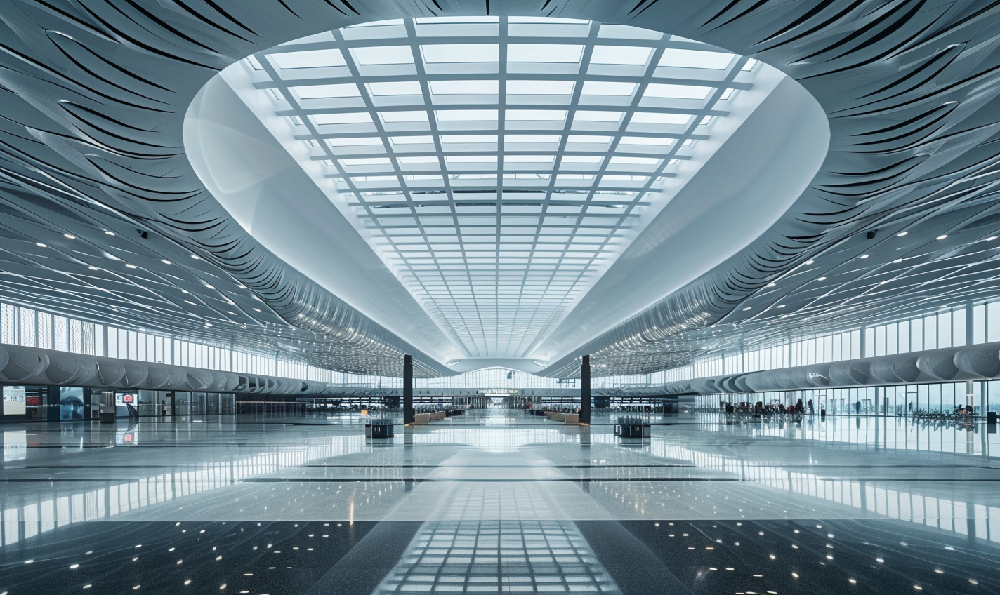

Wu Xu Airport T3 Terminal Project
吴圩机场T3航站楼项目
In the project of Wu Xu Airport T3 Terminal, my work encompasses three main aspects: Design and Concept Development, Concept Analysis and Reporting, and Structural and Technical Implementation. These tasks not only fulfill the responsibilities of an architect but also showcase comprehensive professional competence and skills.
吴圩机场T3航站楼项目中，我的工作涵盖了设计与概念开发、理念分析与汇报以及结构与技术实施三个主要方面。这些工作不仅仅是建筑师职责的执行，更是展现建筑师全面素养和专业能力的重要体现。

Design and Concept Development
设计与概念开发
Design and concept development are among the most creative and decisive stages in any architectural project. In the Wu Xu Airport T3 Terminal project, I undertook the design and concept development of the Terraced Fields and the Wind and Rain Bridge.
设计与概念开发是任何建筑项目中最具创造性和决策性的阶段之一。在吴圩机场T3航站楼项目中，我承担了梯田方案和风雨桥方案的设计与概念开发工作。
Wind and Rain Bridge Design and Concept Development
风雨桥方案设计与概念开发
As a traditional architectural form, the Wind and Rain Bridge carries profound cultural and historical backgrounds. Originating from the Dong ethnic group in Southern China, these bridges are not only practical structures providing shelter from the elements but also symbolize the ingenuity and artistry of the local people. Their intricate wooden frameworks, constructed without the use of nails, and their harmonious integration into the natural landscape, reflect the Dong's deep respect for nature and their environment. In designing the Wind and Rain Bridge concept for the Wu Xu Airport T3 Terminal, I conducted in-depth research into the unique architectural styles and climatic conditions of Southern China. This included studying the traditional construction techniques, the use of local materials, and the aesthetic principles that guide the design of these bridges. I aimed to seamlessly integrate these traditional architectural forms with the functional requirements of a modern airport terminal. This involved adapting the structural designs to meet contemporary safety and durability standards while preserving the aesthetic and cultural essence of the Wind and Rain Bridge. By incorporating elements such as the sweeping rooflines, ornamental wood carvings, and open pavilions typical of these bridges, I sought to create a space that is both functional and evocative of the rich cultural heritage of the region. The final design aims to provide a unique architectural experience for travelers, offering them a glimpse into the local culture and traditions, and enhancing the overall aesthetic appeal of the airport terminal.
作为传统建筑形式的一种，风雨桥具有深厚的文化和历史背景。风雨桥起源于中国南方的侗族，这些桥梁不仅是提供遮风挡雨的实用结构，更象征着当地人民的智慧和艺术性。其复杂的木质框架在不使用钉子的情况下建造，与自然景观的和谐融合，反映了侗族对自然和环境的深深敬意。在设计吴圩机场T3航站楼的风雨桥方案时，我深入研究了中国南方地区独特的建筑风格和气候条件。这包括研究传统的建造技术、当地材料的使用以及指导这些桥梁设计的美学原则。我旨在将这些传统建筑形式与现代机场航站楼的功能需求有机结合。这涉及到在保留风雨桥美学和文化精髓的同时，调整结构设计以符合现代的安全和耐久性标准。通过融入这些桥梁典型的弯曲屋顶线、装饰性的木雕和开放的亭台等元素，我试图创造一个既具功能性又能唤起丰富文化遗产的空间。最终设计旨在为旅客提供独特的建筑体验，让他们一瞥当地的文化和传统，同时增强机场航站楼的整体美学吸引力。
Design Proposal: Flourishing Voyage
方案：盛世远航
The contrail, left by airplanes as they navigate the blue sky, embodies both the strength of machinery and the grace of clouds. In military parades, colored smoke formations often create these trails, showcasing the majesty of flight. This proposal abstracts the contrail into fluid curves, connecting with the undulating airport body to symbolize the power and beauty of planes soaring through the sky.
尾迹云，是飞机在蓝天上航行时留下的轨迹，是机械的力度感和云朵的柔美感的结合。在阅兵仪式上，也常用彩烟梯队制造飞行航迹，展现出飞机遨游于天的风采。本方案将尾迹云抽象为流动性的曲线，与云朵般起伏的机场主体相连，体现飞机扶摇直上，航行于万里云端的力与美。
Design Proposal: Splendid Land of Baiyue
方案：百越形胜
Guangxi, historically known as the land of Baiyue, is renowned for its magnificent landscapes, from the rugged Western Hills to the serene Li River. This proposal abstracts the essence of these landscapes, with mountains cascading like a cloud ladder and water reflecting the blue sky like a mirror. The design draws inspiration from the grandeur of Detian Waterfall, the largest transnational waterfall in Asia.
广西自古百越之地，云贵以南，四水入川，有西山、青秀之雄浑，又有桂林、银滩之婉转。本方案抽象出山水形胜之神，山如云梯，由高就下层层跌落；水如明镜，玻璃材质映照出湛蓝的天，如天在水。水在最高处，其下山川起伏，与有亚洲第一跨国瀑布之称的德天瀑布的磅礴气象遥相呼应。
Design Proposal: Auspicious Cloud Sea
方案：如意云海
The Ruyi, a traditional Chinese symbol of good fortune and fulfillment, conveys wishes for a smooth and pleasant journey. This proposal incorporates the symmetrical abstraction of the Ruyi pattern into the entire architectural form, considering the airport's lighting and fluidity, embedding the auspicious meaning into the design.
如意，是中国传统的吉祥纹样，也有顺心称意的寓意。如意，使旅者如归，行程舒适，体现出机场为客户考虑的服务态度与美好祝愿。本方案将如意纹样抽象对称之后，抽象融入到整个建筑形体之中，充分考虑机场采光与形体的流动感，将吉祥的寓意融入到设计之中。
Design Proposal: Blossoming Nations
方案：花开万国
The hibiscus, the city flower of Nanning, symbolizes unity, prosperity, and flourishing. It is also the national flower of Malaysia, symbolizing the connection between Guangxi and ASEAN countries. This proposal uses the curve of a bridge to express the idea of connecting various countries, with the hibiscus flower blooming at the center, symbolizing the hope for Guangxi’s prosperity and the vitality of the new land-sea corridor.
槿花作为南宁市市花象征着“凝聚、绽放、繁荣”的美好寓意，同时是马来西亚国花，是传递广西和东盟之间连接的桥梁。本方案以桥梁弧线为基础，表达与各国各地连接的寓意，又以朱瑾花在中心的开放之姿，象征着希望广西逐渐变得繁荣兴盛，带有迸发出陆海新通道的生命力的美好寓意。
Concept Analysis and Reporting
理念分析与汇报
Concept analysis and reporting are crucial steps in translating creativity into practical project realization. Throughout the development of each design concept, I actively participated in in-depth analyses of design backgrounds, functional requirements, sustainability considerations, and user experiences.
理念分析和汇报是将创意转化为实际项目实现的关键步骤。在每个设计理念的开发过程中，我积极参与了对设计背景、功能需求、可持续性考量以及用户体验的深入分析。
The design of the wind and rain bridge is significant for multiple reasons. Firstly, it serves as a cultural symbol, especially prominent in Zhuang culture. By incorporating this traditional element into the modern architecture of the Nanning T3 terminal, the design respects and preserves local cultural heritage, enhancing cultural identity and uniqueness.
风雨桥的设计在多个方面都具有重要意义。首先，它作为一种文化象征，尤其在壮族文化中具有重要地位。通过将这一传统元素融入南宁T3航站楼的现代建筑设计中，体现了对地方文化遗产的尊重和传承，增强了文化认同感和独特性。
Secondly, the wind and rain bridge combines functionality and aesthetics. Its arched structure and intricate carvings not only provide a sturdy and elegant appearance but also enhance the architectural beauty of the terminal. This design seamlessly integrates practicality with artistic value, offering a comfortable experience for passengers and serving as a visual highlight of the terminal.
其次，风雨桥将功能性与美学结合在一起。其拱形结构和精美雕刻不仅提供了坚固而优雅的外观，还提升了航站楼的建筑美感。该设计将实用性与艺术价值完美结合，为乘客提供舒适的体验，同时也是航站楼的一大视觉亮点。
Thirdly, sustainability is a key consideration in the design of the wind and rain bridge. The use of local materials and traditional craftsmanship not only minimizes environmental impact but also supports the local economy. The structure is designed to withstand the variable weather conditions of Nanning, ensuring high durability and adaptability.
第三，可持续性是风雨桥设计中的一个关键考虑因素。使用本地材料和传统工艺，不仅减少了对环境的影响，还促进了当地经济的发展。该结构设计能够抵御南宁多变的气候条件，确保了较高的耐久性和适应性。
Finally, the design prioritizes user experience. The spacious bridge deck and anti-slip design ensure safe and comfortable passage for pedestrians. Additionally, the bridge's aesthetic and decorative elements provide visual enjoyment for travelers, enhancing the overall user experience.
最后，该设计优先考虑了用户体验。宽敞的桥面和防滑设计确保行人通行的安全和舒适。此外，风雨桥的美学和装饰元素为旅客提供了视觉享受，提升了整体用户体验。
In summary, the design of the wind and rain bridge not only pays tribute to Zhuang cultural traditions but also adds unique charm and value to the Nanning T3 terminal through its distinctive functionality, aesthetic value, and sustainability.
总之，风雨桥的设计不仅是对壮族文化传统的致敬，还通过其独特的功能性、美学价值和可持续性，为南宁T3航站楼增添了独特的魅力和价值。
Carefully Prepared Reporting PPT
精心准备的汇报PPT
In the stage of concept analysis and reporting, I took on the responsibility of preparing detailed presentation PPTs. These presentations went beyond showcasing the outward appearance and form of the designs; they used data and charts to demonstrate the rationale behind design decisions and expected outcomes.
在理念分析和汇报阶段，我承担了准备详尽的汇报PPT的任务。这不仅仅是简单地展示设计的外观和形式，更是通过数据和图表展示设计决策的依据和效果预期。
Structural and Technical Implementation
结构与技术实施
During the implementation stage of the design, my focus was on updating models and handling detailed aspects of the PN12-PN40 axis underground interlayer and first floor of the front complex, as well as assisting in the structural design of the main right horizontal and vertical corridors.
在设计的实施阶段，我的工作重点是站前综合体PN12-PN40轴地下夹层与地下一层的模型更新和细节处理工作，以及辅助结构专业进行主体右侧水平指廊与竖直指廊的结构设计。
Precise Modeling and Data Handling
精确的建模和数据处理
In the implementation of architectural structures, I utilized advanced modeling software and Building Information Modeling (BIM) technology to ensure accuracy and consistency in design. Through real-time updates and data exchanges, I collaborated closely with structural engineers to resolve complex design issues and optimize the layout and structural performance of building elements.
在建筑结构的实施阶段，我使用先进的建模软件和建筑信息模型（BIM）技术，确保设计的准确性和一致性。通过实时更新和数据交换，我与结构工程师紧密合作，解决设计中的复杂问题，并优化建筑元素的布局和结构性能。
Interdisciplinary Collaboration and Problem Solving
跨学科协作和问题解决
In the process of structural design, I acted not only as an architect but also as a technical leader and problem solver for the project. My involvement in structural design demonstrated my professional knowledge and technical skills, especially in handling complex architectural systems and multi-level structures.
在结构设计的过程中，我不仅仅是建筑师的角色，更是项目的技术领导者和问题解决者。参与结构设计的工作展示了我的专业知识和技术能力，特别是在处理复杂建筑系统和多层次结构时。
Conclusion
总结
Through these work experiences, I have not only showcased technical and design capabilities as an architect but also demonstrated leadership in complex projects and a spirit of teamwork. From design and concept development to concept analysis and reporting, and from structural and technical implementation, I have consistently pursued architectural innovation and quality, making significant contributions to the success and sustainable development of projects.
通过这些工作经历，我不仅展示了作为建筑师的技术和设计能力，更展现了在复杂项目中的领导力和团队合作精神。从设计与概念开发到理念分析与汇报，再到结构与技术实施，我始终秉持着对建筑创新和质量的追求，为项目的成功和可持续发展做出了重要贡献。